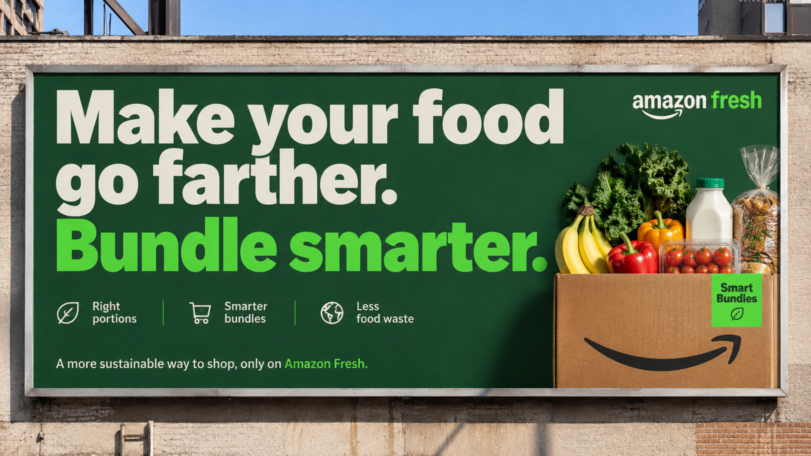

Amazon Fresh · Product design · 2026
Smart Bundles is an Amazon Fresh concept: ingredient bundles sized to what a household actually eats, plus a quick check-in that makes the next order fit better.
Problem
Food waste starts at checkout, not in the fridge.
Households buy more than they eat because default pack sizes don’t match how they cook. The waste is decided in the cart, long before anything spoils.
Solution
Three interventions inside the journey people already use.
Editable ingredient bundles sized to the household, kept together at checkout, and a one-tap check-in after delivery that makes the next bundle fit better.
Research
Waste is concentrated: the smallest group wastes the most.
A small group of shoppers throws away the most food, so defaults built around them do the most good.
Where it leaks
Most waste happens after delivery, where Fresh can’t see it.
Once the order arrives, Fresh loses sight of what gets used, so nothing feeds back into the next order.
Core flows
Four touchpoints. One connected loop.
From discovery to the next order, smarter defaults fit into the shopping people already do.
Browse
Right-sizing is a default, not a restriction. The family pack is one tap away.
Open a bundle to see what’s included and how much, sized to the household. Every quantity stays editable.
Checkout
Bundles stay grouped at checkout, and the savings are shown, not preached.
The bundle stays together in the cart, and delivery works the way it already does.
Design decisions
Meal kits are rigid. Delivery apps over-buy. Nobody is flexible and low-waste, so that became the position.
Rigid meal kits didn’t fit everyday shopping, so I pivoted: keep the flexibility of regular grocery shopping, and change the default portions.
Launch
A new default needs a reason to try it, so I designed the launch too.
A billboard, a logo morph, a tagline, and recommendation cards introduce bundles where people already shop.

Reflection
How I’d know it works: people adopt it, less food spoils, and they reorder.
These are pilot targets, not measured results. Next I’d test the defaults with households, refine portions with real use, and measure whether the change lasts.
Takeaway
Checkout works best when it reflects what people actually consume, not just what they purchase.
This is a snapshot. Email me for the full story.